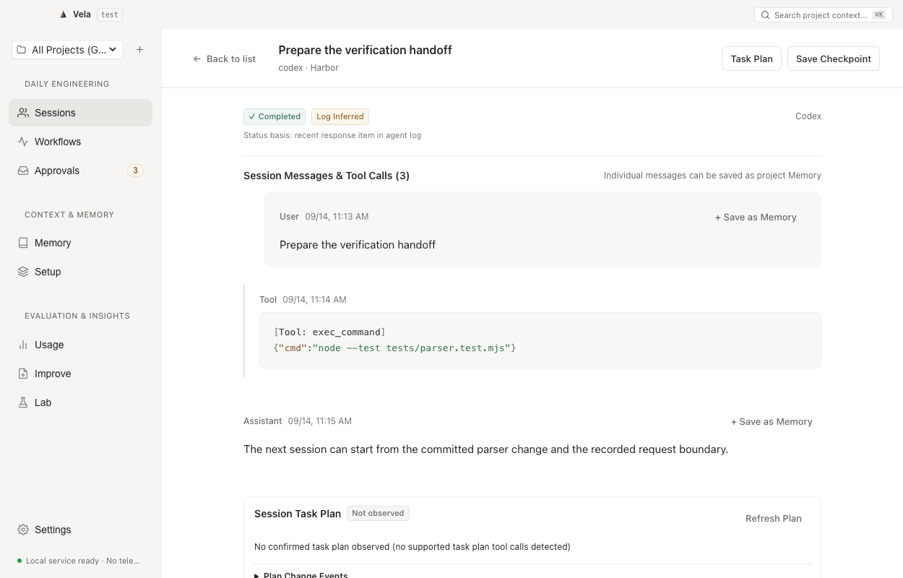
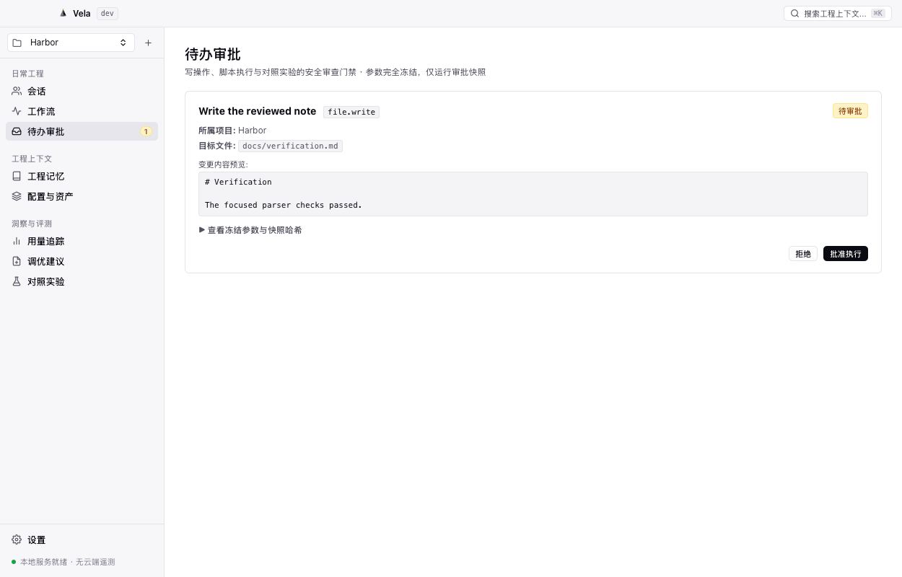

Your sessions. Your context. Your next step.
The engineering layer for coding agents on macOS. Turn fragmented conversations across Claude Code, Codex, and Cursor into persistent engineering context for your next step. Inspect evidence, preserve project memory, and review workflows before running mutations. Keep your data local, keep your tools familiar.
git clone https://github.com/Atingaii/Vela.git

Explore the whole workspace.
Twelve connected capabilities, from session history and configuration to knowledge, automation, evaluation and recovery.
Clear engineering levers for coding agents
Designed for session inspection, project memory retention, read-only workflow rehearsals, and comparative testing. Keep familiar habits while gating mutations behind explicit approvals.
Find the origin of changes
Pinpoint tool calls and context evidence across Claude Code, Codex, and Cursor session logs to trace decision rationale.
Preserve constraints worth reusing
Save exact build patterns and verification constraints as candidate proposals, activate via review, and recall within token budgets.
Inspect first, mutate after
Dry-run plans before execution, inspect frozen parameter hashes in Inbox before single-approval runs, and retain Undo transaction logs.
Retain evidence and uncertainty
Run paired baseline vs candidate evaluations on the same task in isolated Git worktrees, with an independent verifier determining boundaries.
Turn scattered agent sessions
into reusable experience.
A finished session should not mean lost context. Vela monitors local log streams from registered projects, structuring tool events and code modifications into clear records.
-
Multi-agent log ingestion: Automatically discovers Claude Code and Codex session logs (Cursor format supported via read-only import), using bounded reads on discovery to manage I/O and memory overhead.
-
Inferred session status: Derives timelines and status strictly from supported local log events rather than unverified background process probes; missing evidence is honestly labeled as unknown.
-
Turn evidence into Candidate Memory: Click any message to propose candidate project memory, transitioning to active only after human review to keep noise out of recall.
Runtime status is inferred from recent log events, not an independent system daemon probe; initial ingestion is bounded to 60 log files with a 256 KB tail window without full retrospective guarantees.

Inspect read-only dry runs.
Approve before execution.
Assemble repetitive Git checks, environment validations, and local builds into governed pipelines. Every mutating step undergoes parameter hash freezing to prevent unintended file writes and command executions.
-
Dry Run safety rehearsals: Read-only Git commands (status/diff/log) execute against your current working directory; mutating and test commands are stubbed to safely preview planned changes without side effects.
-
Inbox gating & parameter freezing: File modifications and test commands enter your Inbox after computing frozen parameter hashes, requiring explicit, single-action engineer approval.
-
Single-approval principle: Approvals apply strictly once to frozen parameters without automated retries for uncertain remote side effects, keeping operations bounded to what was reviewed.
Dry Run stubs mutating operations; a successful preview verifies plan schema rather than physical test passes; currently restricted to registered local workspace files and commands, not arbitrary unvetted SaaS automation.

Your engineering assets.
No cloud account required.
Built with native Swift and AppKit desktop architecture powered by local SQLite, without bundled Electron, Chromium, or Node.js runtimes. Assets remain human-readable and under your complete control.
-
Plaintext Markdown & local SQLite: Long-term engineering assets are stored in human-readable Markdown files, while fast indexing and audit logs run on local SQLite WAL.
-
Strict Private Library isolation: Private Library entries are excluded at the lowest layer from MCP and agent context retrieval, protecting personal notes and credentials.
-
Budget-capped lexical recall: CLI recalls active memories within a conservative 1,000-token budget by default, avoiding automatic dumps at session startup and eliminating remote vector dependencies.
Vela includes no built-in commercial telemetry; however, explicitly imported URLs and user-approved remote agent commands still communicate over the network. Local-first is not physical air-gapping.
Run Vela locally.
Power your next engineering session.
Developer preview build for Apple Silicon (macOS 13+). No registration required; download and run with sessions and project memory stored locally.
Security notice: Current build is ad-hoc signed, without Developer ID signature or Apple notarization. If macOS presents a security prompt on initial open, visit macOS System Settings ➔ Privacy & Security and click "Open Anyway". Building from official source is also supported.